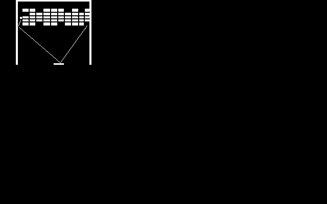

コンピュータと私
- ［出会い］
- 私が初めてコンピュータを意識したのは、テレビゲームでした。
- 初めての出会いは、中学か小学生のときに、友達の家でやった「テニスゲーム」でした。
- 確か、コマネチがオリンピックで１０点満点を出しまくっていた頃なので、何年前かな？
- ［前兆］
- 中学時代は「陣取りゲーム」や「ガンマンゲーム」でコンピュータと戯れて、

「ブロック崩し」にはまって、コンピュータ（ゲーム）の虜になっていった時代でした。
- ［インベーダゲーム］
- 高校に入った頃には「ブロック崩し」が１球／面程度でクリア出来るようになっていました。そのころ出たのがあの有名な「インベーダゲーム」でした。
- 「インベーダゲーム」は手にタコを作るくらいやりました。でも、あまりうまい方ではなくて、点数も覚えていませんが、１１面をクリアして１順する（２順目は２面から）のですが、４順ぐらいで死んでいました。
- 「インベーダゲーム」にはイメージにも描いているように、”名古屋打ち”という必殺技がありました。この名古屋打ちの最後のツメは人それぞれで、私の場合、最終段が右から左に移動するときは下のような方法
-
- 最終段を１段消す。 １段下がったら、また、最終段を１段消す。
-
- 半段下がったら左上消す。さらに半段下がったら、最終段を１段消す。
-
- そして、左から順に消す。次を、消す。
-
- さらに次を、消す。 左に移動しながら、下を消す。
-
- 上を消す。
- で、クリアしていました。この消し方は私が友達の前で初めて見せた技だったので、私の回りでは「三七男打ち」と呼ばれていました。が、決して私が発明したものではありません。
- また、最終段が左から右に移動するときは下のような二段打ちを使っていました。
-
- 右下から２段づつ、左に消していく。
- でも、インベーダ熱も高校二年生の頃にはすっかり醒めて、そのあとは、あまりはまったゲームはありませんでした。（決して、絵を描くのが面倒くさいので略したわけではありません(^^;)。）
- つづく・・・。
たろサのホームページに【戻る】